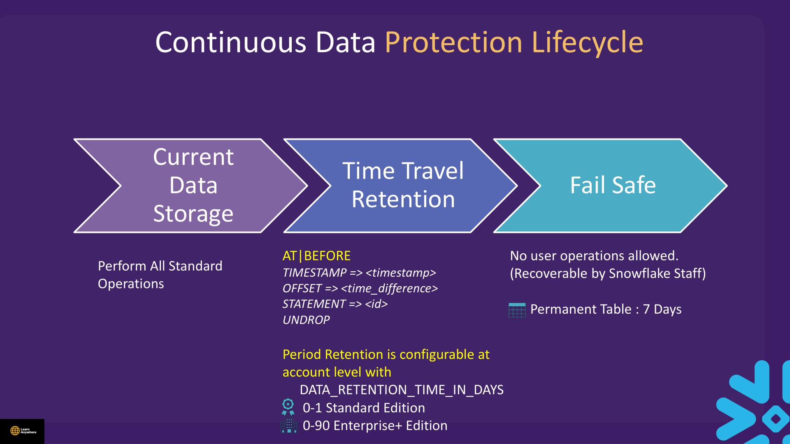
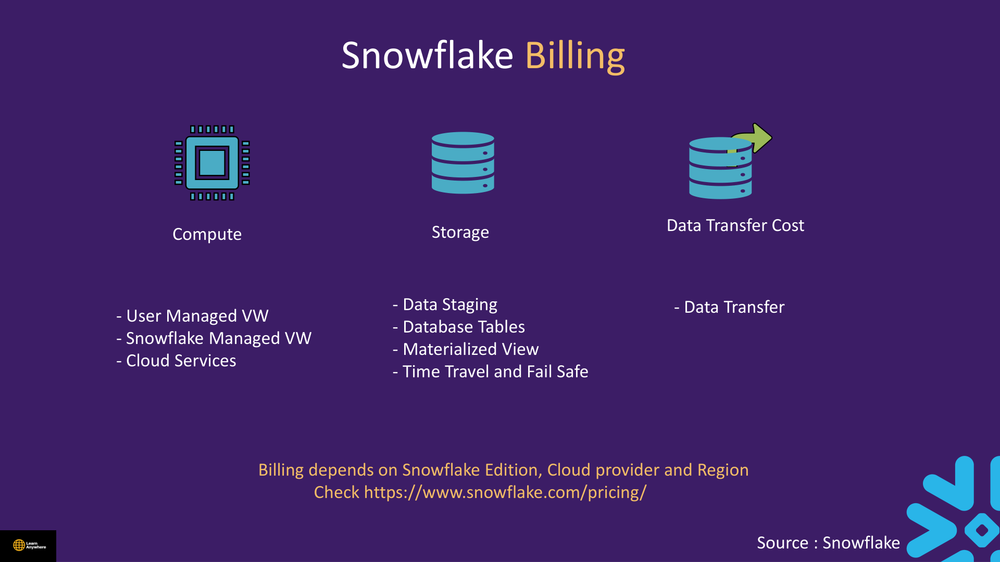
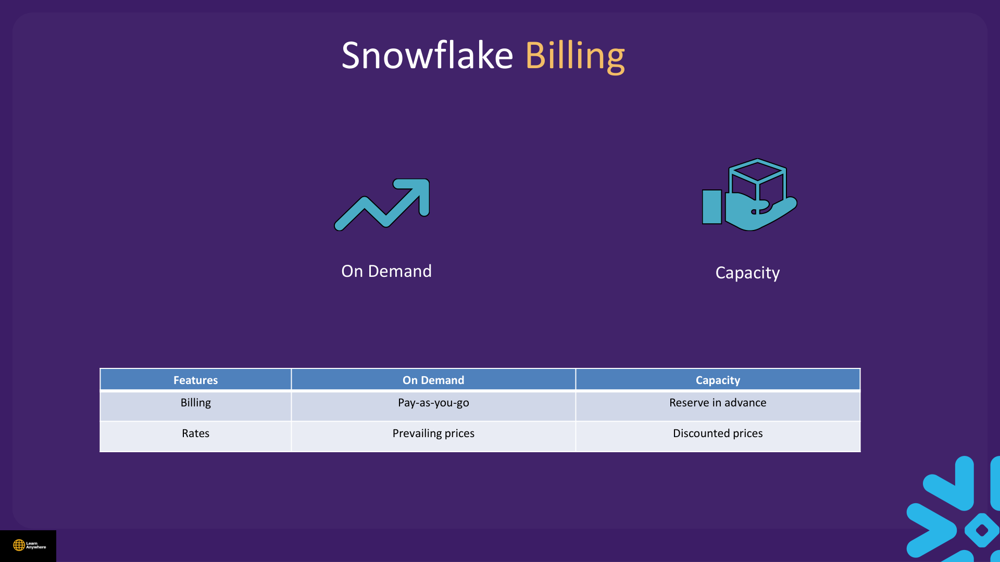
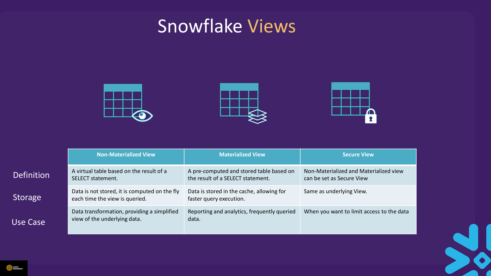

Lectures in this section
Every lecture below links to the notes that cover it.
- Time Travel Concept 3:29
- Demo : Time Travel 8:30 2. Time Travel, Transformation, Billing, Views/Time Travel.txt
- Time Travel Quiz
- Demo : Data Transformation Part I 4:31 2. Time Travel, Transformation, Billing, Views/Data Transformation Part I.txt
- Demo : Insert Overwrite 2:03 2. Time Travel, Transformation, Billing, Views/INSERT OVERWRITE.txt
- Data Transformation Quiz
- Billing in Snowflake 8:39
- Snowflake Views : Concept 5:45
- Demo : Snowflake Views 5:37 2. Time Travel, Transformation, Billing, Views/Views.txt
- Billing and Views Quiz
Time Travel Concept
Every DML change in Snowflake leaves a trail. Instead of restoring from tape backups, you can query historical versions or restore dropped tables — as long as you act inside the retention window.
Continuous Data Protection lifecycle

While data is in current storage, you run all standard DML and query operations. During the Time Travel retention period you can read historical versions with AT or BEFORE using TIMESTAMP =>, OFFSET =>, or STATEMENT =>, and restore dropped objects with UNDROP. Retention is configurable per object (and at account level) via DATA_RETENTION_TIME_IN_DAYS: 0–1 day on Standard edition, 0–90 days on Enterprise edition and above.
After Time Travel expires, permanent tables enter Fail-safe for a fixed 7 days. No user operations are allowed during Fail-safe — recovery requires Snowflake Support. Transient and temporary tables skip Fail-safe entirely.
| Table type | Time Travel (default max) | Fail-safe |
|---|---|---|
| Permanent | 0–1 day (Standard) · 0–90 days (Enterprise+) | 7 days (fixed) |
| Transient | 0–1 day | 0 days |
| Temporary | 0–1 day (session) | 0 days |
Demo : Time Travel
Course file: 2. Time Travel, Transformation, Billing, Views/Time Travel.txt
Use AT or BEFORE on tables, schemas, and databases to read data as it existed at a point in time. Both clauses accept exactly one of three arguments.
| Clause | Argument | Meaning |
|---|---|---|
AT / BEFORE | TIMESTAMP => | Exact moment (set TIMEZONE explicitly in labs) |
AT / BEFORE | OFFSET => | Seconds relative to now; negative = past (e.g. -300 = 5 minutes ago) |
BEFORE | STATEMENT => | State immediately before a specific query ID ran — ideal for undoing a bad UPDATE |
USE ROLE SYSADMIN;
USE WAREHOUSE compute_wh;
USE DATABASE la_db;
USE SCHEMA la_schema;
ALTER SESSION SET TIMEZONE = 'UTC';
CREATE OR REPLACE TABLE customer (
customer_id INT,
first_name VARCHAR(50),
last_name VARCHAR(50),
email VARCHAR(100),
phone VARCHAR(20),
address VARCHAR(200),
city VARCHAR(50),
state VARCHAR(50),
country VARCHAR(50),
join_date DATE
);
INSERT INTO customer (customer_id, first_name, last_name, email, phone, address, city, state, country, join_date)
VALUES
(1, 'John', 'Doe', 'john@example.com', '+1-555-1234', '123 Main St', 'Anytown', 'CA', 'USA', '2022-01-01'),
(2, 'Jane', 'Smith', 'jane@example.com', '+1-555-5678', '456 Oak St', 'Anycity', 'NY', 'USA', '2022-01-02');
SELECT SYSTIMESTAMP() AS snapshot_time;
UPDATE customer SET phone = '+3-555-5678' WHERE customer_id = 1;
SELECT * FROM customer;
-- Replace with YOUR query ID from Activity → Query History
SELECT * FROM customer
BEFORE(STATEMENT => '<your_query_id>');
SELECT * FROM customer AT(OFFSET => -300);
SELECT * FROM customer
AT(TIMESTAMP => '2026-07-28 10:00:00'::TIMESTAMP_NTZ);
DROP TABLE customer;
UNDROP TABLE customer;
SELECT * FROM customer;Time Travel.txt uses a hard-coded query ID (01ad0729-…) and comments "20 seconds ago" while using OFFSET => -150 (150 seconds). Always use your own query ID from Query History and match OFFSET seconds to your intent.
Retention settings
ALTER TABLE customer SET DATA_RETENTION_TIME_IN_DAYS = 30;
SHOW PARAMETERS LIKE 'DATA_RETENTION%' IN TABLE customer;
-- ACCOUNTADMIN only — raises floor for ALL permanent objects; use with care
-- ALTER ACCOUNT SET MIN_DATA_RETENTION_TIME_IN_DAYS = 10;
-- ALTER ACCOUNT UNSET MIN_DATA_RETENTION_TIME_IN_DAYS;ALTER ACCOUNT SET MIN_DATA_RETENTION_TIME_IN_DAYS increases Time Travel storage cost account-wide. Do not run in shared trial accounts without approval.
Zero-copy cloning at a point in time (CREATE TABLE … CLONE … AT/BEFORE) is covered in advanced recovery material — see Section 5.
Time Travel Quiz
- What is the difference between
AT(TIMESTAMP => …)andBEFORE(STATEMENT => …)? - What units does
OFFSETuse? - How long is Fail-safe and can users query it?
- What does
UNDROPrestore?
BEFORE(STATEMENT => id) shows data from just before that statement executed — the usual "undo my last change" pattern. Fail-safe is 7 days after Time Travel ends; only Snowflake Support can recover from it.
Demo : Data Transformation Part I
Course file: 2. Time Travel, Transformation, Billing, Views/Data Transformation Part I.txt
Transform data with standard SQL functions. These run on your warehouse and consume compute credits.
USE DATABASE la_db;
USE SCHEMA la_schema;
SELECT customer_id,
CONCAT(first_name, ' ', last_name) AS full_name,
email, phone, join_date
FROM customer;
SELECT customer_id, first_name, last_name, email,
LTRIM(phone, '+') AS clean_phone, join_date
FROM customer;
SELECT customer_id, first_name, last_name, email, phone, join_date
FROM customer
WHERE first_name ILIKE '%john%';
SELECT customer_id, first_name, last_name,
LEN(address) AS address_length, join_date
FROM customer;
-- Re-run previous query result without re-executing logic
SELECT customer_id FROM TABLE(RESULT_SCAN(LAST_QUERY_ID()));
SELECT LAST_QUERY_ID(-2);RESULT_SCAN / LAST_QUERY_ID: Useful for chaining transformations in scripts. Negative indices in LAST_QUERY_ID(n) refer to prior queries in the session. More transform functions for bulk loads are in Section 5.
Demo : Insert Overwrite
Course file: 2. Time Travel, Transformation, Billing, Views/INSERT OVERWRITE.txt
CREATE OR REPLACE TABLE employees (
id INT,
name VARCHAR(255),
department VARCHAR(255)
);
INSERT INTO employees (id, name, department) VALUES
(1, 'John Doe', 'Engineering'),
(2, 'Jane Doe', 'Sales');
SELECT * FROM employees;INSERT INTO employees SELECT … FROM employees WHERE department = 'Engineering' — that appends rows; it does not overwrite the table. The course comment "This will overwrite…" is incorrect.
To truly replace table contents, use INSERT OVERWRITE INTO (or truncate + insert):
-- Correct overwrite semantics — replaces all rows in employees
INSERT OVERWRITE INTO employees
SELECT id, name, department FROM employees WHERE department = 'Engineering';
SELECT * FROM employees;
-- Expected: only Engineering rows remainINSERT OVERWRITE INTO replaces the entire table contents atomically. Plain INSERT INTO … SELECT adds rows. Know the difference.
Data Transformation Quiz
- When would you use
ILIKEinstead ofLIKE? - What does
RESULT_SCAN(LAST_QUERY_ID())return? - What is the difference between
INSERT INTO … SELECTandINSERT OVERWRITE INTO … SELECT?
Billing in Snowflake
Snowflake uses credits as the billing unit. Three major consumption categories appear on every invoice; rates depend on edition, cloud provider, and region — see snowflake.com/pricing for current numbers.

| Category | What bills | Billing model |
|---|---|---|
| Compute | User-managed virtual warehouses | Credits per second (60s minimum); size × runtime, not query complexity |
| Snowflake-managed / serverless compute | Credits for Snowflake-provisioned resources (Snowpipe, tasks, materialized view maintenance, etc.) | |
| Cloud services | Credits; waived if ≤ 10% of daily warehouse credits consumed | |
| Storage | Staged files | Per TB / month |
| Database tables (active data) | Per TB / month (compressed) | |
| Materialized views | Per TB / month for stored results | |
| Time Travel and Fail-safe | Per TB / month for historical micro-partitions | |
| Transient / temporary tables and clones | Per TB / month (no Fail-safe charge on transient/temp) | |
| Data transfer | Ingress, egress, replication, external functions | Ingress free; egress per byte; see breakdown below |
Compute billing details
A virtual warehouse is one or more clusters of compute resources for executing queries, loading data, and other DML. Snowflake credits pay for processing time based on warehouse size and how long it runs, not on query complexity.
- Billed by the second with a 60-second minimum each time a warehouse resumes.
- When you scale up, you are charged only for the extra compute of the larger size for the duration of the resize.
- When you scale down, you are briefly charged for both sizes until the resize completes.
- Cloud services (authentication, security enforcement, query compilation and optimisation, request/query caching) consume credits but are free when daily usage is ≤ 10% of warehouse credits consumed that day.
Storage lifecycle costs
- Active data: Compressed micro-partitions for permanent/transient tables.
- Time Travel: Historical versions retained per retention setting — billed as storage.
- Fail-safe: 7-day disaster-recovery window after Time Travel ends (permanent only).
- Transient/temp: Skip Fail-safe charges — good for rebuildable staging data.
- Clones: Zero-copy at creation, but changes to cloned objects bill storage independently.
Data transfer
Data transfer is moving data into (ingress) and out of (egress) Snowflake.
- Ingress (loading): Free — no charge to load data into Snowflake.
- Egress (unloading): Charged per byte when data leaves Snowflake (for example, unloading to an external stage or downloading large result sets that exceed client-side thresholds).
- Replication: Free within the same region and cloud provider; charged when region or cloud provider differs.
- External functions: Charged when data is transferred out to the external service.
COPY INTO unloads to external storage.
On-demand vs capacity pricing
Most accounts start on on-demand (pay-as-you-go) billing. Larger commitments can move to capacity pricing with discounted rates by reserving credits in advance.
| Feature | On-demand | Capacity |
|---|---|---|
| Billing | Pay-as-you-go | Reserve credits in advance |
| Rates | Prevailing (list) prices | Discounted prices |

- Monitor usage:
SNOWFLAKE.ACCOUNT_USAGE.WAREHOUSE_METERING_HISTORY, Snowsight Admin → Cost Management.
Snowflake Views : Concept
A view lets you access the result of a query as if it were a table — the query is stored in the CREATE VIEW statement. Snowflake supports three view types: non-materialized (standard), materialized, and secure.
| View type | Definition | Storage | Typical use case |
|---|---|---|---|
| Non-materialized (standard) | Virtual table based on a SELECT statement |
Data not stored — computed on each query | Data transformation; simplified view of underlying data |
| Materialized | Pre-computed and stored table based on a SELECT |
Results stored in cache/micro-partitions for faster reads | Reporting and analytics on frequently queried data |
| Secure | Same as underlying view type, with hidden definition | Same as underlying view (none for standard; stored for materialized) | Limit access to data and hide logic from consumers |

A secure view can wrap either a standard or materialized view — it adds a privacy layer without changing how data is stored. Standard views behave like tables but re-execute live SQL; materialized views are serverless-maintained and faster for repeat queries but carry storage and refresh cost.
Materialized views — when to use
Materialized views (Enterprise+) suit specific patterns:
- Query results contain a small number of rows and/or columns.
- Results require significant processing — analysis of semi-structured data, slow aggregates, or queries against external tables.
- The base table does not change frequently — frequent refreshes erode the benefit.
Advantages
- Improve performance of repeat queries.
- Automatically maintained by Snowflake.
- Data accessed through them is always up to date.
Cost & limitations
- Cost: Storage for results + serverless compute for maintenance.
- Single base table only — no joins.
- Many aggregate functions not allowed.
- Full restriction list: materialized view limitations.
GET_DDL. Use SECURE VIEW when exposing data externally.
Demo : Snowflake Views
Course file: 2. Time Travel, Transformation, Billing, Views/Views.txt
USE ROLE SYSADMIN;
USE WAREHOUSE compute_wh;
USE DATABASE la_db;
USE SCHEMA la_schema;
CREATE OR REPLACE VIEW customer_view AS
SELECT customer_id, first_name, last_name, email, phone, join_date
FROM customer;
SELECT * FROM customer_view;
CREATE OR REPLACE VIEW customer_location_view AS
SELECT customer_id,
CONCAT(address, ', ', city, ', ', state, ', ', country) AS location
FROM customer;
-- Materialized views require Enterprise+
CREATE OR REPLACE MATERIALIZED VIEW customer_location_mv AS
SELECT customer_id,
CONCAT(address, ', ', city, ', ', state, ', ', country) AS location
FROM customer
WHERE state = 'CA';
CREATE OR REPLACE SECURE VIEW customer_location_secure AS
SELECT customer_id,
CONCAT(address, ', ', city, ', ', state, ', ', country) AS location
FROM customer
WHERE state = 'CA';
SHOW VIEWS;SECURE MATERIALIZED VIEW — secure materialized views have specific restrictions. This demo uses a SECURE VIEW (non-materialized) for the secure-sharing pattern, which matches exam expectations.
Secure view DDL visibility
-- As ACCOUNTADMIN, grant access to a test role
GRANT USAGE ON DATABASE la_db TO ROLE analyst_role;
GRANT USAGE ON SCHEMA la_schema TO ROLE analyst_role;
GRANT SELECT ON VIEW customer_location_secure TO ROLE analyst_role;
GRANT USAGE ON WAREHOUSE compute_wh TO ROLE analyst_role;
USE ROLE analyst_role;
SELECT * FROM customer_location_secure;
-- Secure view: definition hidden from non-owners
SELECT GET_DDL('VIEW', 'customer_location_secure');Billing and Views Quiz
- When are cloud-services credits free?
- What storage components bill beyond active table data?
- Which view type hides its definition from consumers?
- Which view type requires Enterprise edition?
GET_DDL.
Interview questions
Try to answer each one before opening it.
What are the three Time Travel argument forms for AT/BEFORE, and when would you use each?Fundamentals
TIMESTAMP => pins an exact moment — set TIMEZONE explicitly in labs. OFFSET => uses seconds relative to now; negative values go into the past (for example, -300 is five minutes ago). BEFORE(STATEMENT => '<query_id>') shows data immediately before a specific statement ran — the usual undo pattern after a bad UPDATE. Use TIMESTAMP for audit replay, OFFSET for quick "a few minutes ago" checks, and STATEMENT when you have the query ID from Query History.
What are the default and maximum Time Travel retention values by edition and table type?Fundamentals
Permanent tables: Standard defaults to 1 day and allows 0–1 day; Enterprise+ allows 0–90 days. Transient and temporary tables cap at 0–1 day regardless of edition. Fail-safe is fixed at 7 days for permanent tables only — not configurable. Transient and temporary tables have no Fail-safe. Setting retention to 0 disables Time Travel for that object but Fail-safe still applies to permanent tables until the lifecycle completes.
How do DATA_RETENTION_TIME_IN_DAYS and MIN_DATA_RETENTION_TIME_IN_DAYS interact?Comparison
DATA_RETENTION_TIME_IN_DAYS is set per table (or inherited from schema/database defaults) and controls that object's Time Travel window within edition limits. MIN_DATA_RETENTION_TIME_IN_DAYS is an account-level parameter (ACCOUNTADMIN only) that sets a floor — effective retention is MAX(table setting, account minimum). Raising the account minimum increases Time Travel storage cost account-wide; avoid running it in shared trial accounts without approval.
What is the difference between Time Travel and Fail-safe, and who can recover from each?Comparison
Time Travel is user-accessible — you query historical data with AT/BEFORE, restore with UNDROP, or clone at a point in time. Duration is configurable within edition limits. Fail-safe is a fixed 7-day disaster-recovery window after Time Travel ends, for permanent tables only. Users cannot query Fail-safe data; only Snowflake Support can recover from it. Lifecycle order: Active → Time Travel → Fail-safe → Purged.
What does UNDROP restore, and what happens if someone recreated an object with the same name?Gotcha
UNDROP restores dropped tables, schemas, or databases still within their Time Travel retention window — it reverses the drop, not individual row changes. If a new object with the same fully qualified name already exists, UNDROP fails because the name is taken. You must drop or rename the replacement object first, then undrop. Row-level undo still uses BEFORE(STATEMENT => …), not UNDROP.
How do standard, secure, and materialized views differ?Comparison
Standard views store only the query definition and re-execute it on every query — always current, no extra storage. Secure views also store only a definition but hide it from consumers and are required for secure data sharing. Materialized views (Enterprise+) physically store precomputed results and are auto-maintained — faster reads but storage cost and refresh overhead. Standard and secure views are available on all editions; materialized views require Enterprise or higher.
What does a secure view actually protect?Fundamentals
A secure view prevents consumers from seeing the underlying SQL definition — GET_DDL('VIEW', …) does not reveal the base-table logic or filter predicates to non-owner roles. That stops analysts from inferring row-level security rules or sensitive join logic. It is required for secure data sharing when exposing data externally. It does not encrypt data at rest or bypass warehouse compute — queries still run on a warehouse and consume credits.
What are the main limitations of materialized views compared with standard views?Gotcha
Materialized views require Enterprise edition or higher, physically store precomputed results (extra storage cost), and need maintenance when base tables change — unlike standard views that re-execute live SQL with no stored data. They suit repetitive read-heavy patterns; ad-hoc queries that change often are better served by standard or secure views. Snowflake also imposes supported-query restrictions on materialized view definitions (not every SELECT qualifies), though the exact rules are beyond this section's scope.
What are the three main things Snowflake bills for?Cost
Virtual warehouse compute — credits per second (60-second minimum on resume), based on warehouse size × runtime. Storage — per TB/month for active data, Time Travel history, Fail-safe, and staged files. Cloud services — credits for coordination work, waived when daily usage is ≤ 10% of warehouse credits. Serverless features (Snowpipe, tasks) and data transfer are additional categories beyond these three core buckets.
Why might a query that returns instantly cost nothing in compute credits?Scenario
If an identical query ran recently and the result is still in the result cache maintained by Cloud Services, Snowflake returns cached results without re-executing on a warehouse — no warehouse credits consumed. Metadata-only commands (SHOW, DESCRIBE, empty DDL) also run on Cloud Services without starting a warehouse. Cloud-services usage is free when it stays at or below 10% of daily warehouse credits. Cached results require the same user, role, and warehouse context as the original query.
When is data transfer free versus charged in Snowflake?Cost
Ingress (loading into Snowflake) is free. Replication within the same region and cloud provider is free; cross-region or cross-cloud replication is charged. Egress is charged per byte when data leaves Snowflake — bulk unloads to external stages, external function calls that send data out, and similar. Snowflake does not charge egress when a client or driver retrieves query results across regions or clouds — that exemption applies to result retrieval, not to COPY INTO unloads.
When should you create a materialized view instead of a standard view?Comparison
Create a materialized view when the same expensive query runs repeatedly and the base table changes infrequently — especially when results are a small row/column set, involve heavy aggregates or semi-structured parsing, or query an external table. You pay storage for the cached results plus serverless compute for automatic maintenance, and you accept limitations: single table only, no joins, restricted aggregates. Ad-hoc or frequently changing queries are better served by standard views.
Hands-on practice
Run these in a trial account on an X-Small warehouse with AUTO_SUSPEND = 60. Clean up when you finish.
-
Create the
customertable inLA_DB.LA_SCHEMAwith two sample rows. Update John Doe's phone, then useBEFORE(STATEMENT => '<your_query_id>')with the UPDATE's query ID from Activity → Query History to recover the original phone number.Current row shows the new phone. The
BEFORE(STATEMENT => …)query returns+1-555-1234for customer_id 1.Show solutionSQL
USE ROLE SYSADMIN; USE WAREHOUSE compute_wh; USE DATABASE la_db; USE SCHEMA la_schema; ALTER SESSION SET TIMEZONE = 'UTC'; CREATE OR REPLACE TABLE customer ( customer_id INT, first_name VARCHAR(50), last_name VARCHAR(50), email VARCHAR(100), phone VARCHAR(20), address VARCHAR(200), city VARCHAR(50), state VARCHAR(50), country VARCHAR(50), join_date DATE ); INSERT INTO customer (customer_id, first_name, last_name, email, phone, address, city, state, country, join_date) VALUES (1, 'John', 'Doe', 'john@example.com', '+1-555-1234', '123 Main St', 'Anytown', 'CA', 'USA', '2022-01-01'), (2, 'Jane', 'Smith', 'jane@example.com', '+1-555-5678', '456 Oak St', 'Anycity', 'NY', 'USA', '2022-01-02'); UPDATE customer SET phone = '+3-555-5678' WHERE customer_id = 1; SELECT * FROM customer; -- Replace with YOUR query ID from Query History SELECT * FROM customer BEFORE(STATEMENT => '<your_query_id>'); -
Drop the
customertable, then runUNDROP TABLE customerand confirm both rows are back. Also testAT(OFFSET => -300)after making another change.UNDROPrestores the table with all rows intact.AT(OFFSET => -300)returns data as it existed five minutes ago (if within retention).Show solutionSQL
DROP TABLE customer; UNDROP TABLE customer; SELECT COUNT(*) AS row_count FROM customer; -- Expected: 2 SELECT * FROM customer AT(OFFSET => -300); -
Create a standard view
customer_view, a materialized viewcustomer_location_mvfiltered tostate = 'CA', and a secure viewcustomer_location_secure. Query each and runSHOW VIEWS.SHOW VIEWSlists all three. Materialized view returns only CA customers (customer_id 1). Secure and standard views execute successfully.Show solutionSQL
CREATE OR REPLACE VIEW customer_view AS SELECT customer_id, first_name, last_name, email, phone, join_date FROM customer; CREATE OR REPLACE MATERIALIZED VIEW customer_location_mv AS SELECT customer_id, CONCAT(address, ', ', city, ', ', state, ', ', country) AS location FROM customer WHERE state = 'CA'; CREATE OR REPLACE SECURE VIEW customer_location_secure AS SELECT customer_id, CONCAT(address, ', ', city, ', ', state, ', ', country) AS location FROM customer WHERE state = 'CA'; SELECT * FROM customer_view; SELECT * FROM customer_location_mv; SELECT * FROM customer_location_secure; SHOW VIEWS; -
Compare on-demand and capacity pricing in your own words, then look up current credit rates for your trial account's cloud and region at
snowflake.com/pricing. Note one compute billing rule (60-second minimum) and one data-transfer rule (ingress free).You can explain pay-as-you-go vs reserved credits, and cite at least one free vs charged transfer scenario from the billing section.
-
Clean up: drop all views and the
customertable created in this section.All views and the base table are removed.
SHOW VIEWSandSHOW TABLES LIKE 'CUSTOMER'return no matching objects.Show solutionSQL
DROP VIEW IF EXISTS customer_view; DROP MATERIALIZED VIEW IF EXISTS customer_location_mv; DROP VIEW IF EXISTS customer_location_secure; DROP TABLE IF EXISTS customer;
Recap
- Continuous Data Protection: current storage → Time Travel (
DATA_RETENTION_TIME_IN_DAYS0–1 Standard, 0–90 Enterprise+) → Fail-safe (7d, permanent only, no user access) → Purged. - Query past with
AT/BEFORE+TIMESTAMP,OFFSET(seconds), orSTATEMENT(query ID); restore drops withUNDROP. - Billing pillars: compute (user VW + serverless + cloud services with 10% daily waiver), storage (staged files, tables, MVs, Time Travel, Fail-safe, clones), data transfer (ingress free, egress per byte).
- Compute billed per second (60s min); scale-up charges extra compute only; scale-down briefly charges both sizes.
- On-demand = pay-as-you-go; capacity = reserved credits at discounted rates.
- Query-result retrieval across regions/clouds is not charged as egress; bulk unloads are.
INSERT OVERWRITE INTOreplaces table contents; plainINSERT INTO … SELECTappends.- Views: standard (virtual), materialized (stored, Enterprise+, single-table limits), secure (hides definition on either type).